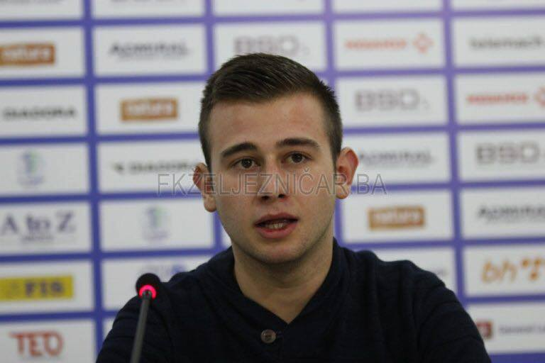
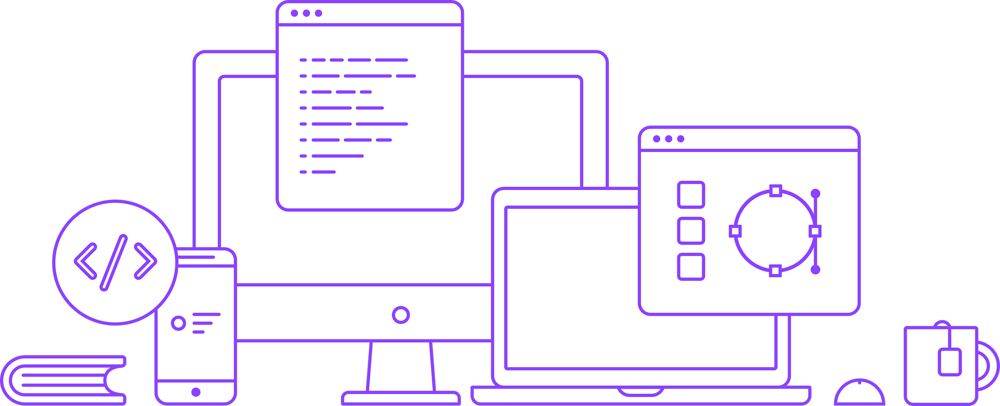

Ukratko o meni
26.11.2018.
Nedim Đedović, rođen u Sarajevu 30.08. 1998. godine. Student prve godine Stručnog smjera Informacionih tehnologija na PMF-u.
Biografija
20.11.2018.

Nedim Đedović, rođen u Sarajevu 30.08.1998. godine. Student prve godine Stručnog smjera Informacionih tehnologija na PMF-u.
Završio sam osnovnu školu Aleksa Šantić 2013. godine, a potom Petu Gimnaziju također u Sarajevu 2018. godine.
Nakon završetka srednje škole upisao sam Internacionalni Burch Univerzitet odsjek Informacionih tehnologija i Web dizajna.
Po završetku prvog semestra zaposlio sam se u Call centru "Arc Solution", gdje sam radio nekoliko mjeseci kao call agent, a potom kao IT support.
Kada sam saznao za Stručni smjer Informacionih tehnologija na Prirodno-matematičkom fakultetu, odlučio sam da se prebacim i pokušam naučiti
što više mognem, te se pokušam stručno usavršiti.
Prilikom pohađanja nastave na Internacionalnom Burch Univerzitetu, susretao sam se sa raznim programskim jezicima, kao što su :
- C
- C++
- C#
- Java
- Java script
Moji ciljevi
Planiram usavršiti Web dizajn, te razvijati mobilne aplikacije za platforme IOS i Android.
Moj rad možete pratiti na socijalnim mrežama
- Instagram: @nedoo14
- Facebook: Nedim Đedović
- Gmail:nedootm87@gmail.com
- snapchat: nedoo14
- Uskoro i na mom youtube kanalu....